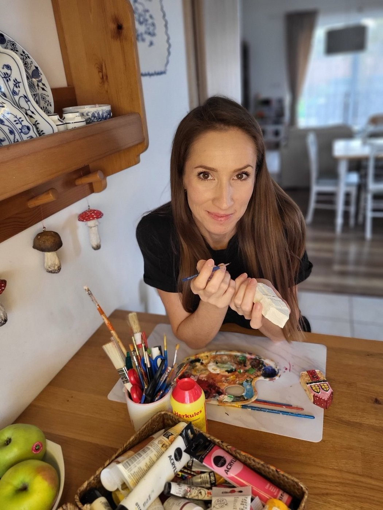

Príbeh · O autorke
Praneter · Objaviteľka · Tvorca tejto stránky

Anna Lockwoodová Šenšelová
Autorka projektu
Môj život je od začiatku poprepletaný dotykmi s umením, tradičným remeslom a kreativitou. Od malička som sa rada učila nové výtvarné techniky — a táto vášeň mi zostala dodnes.
V posledných rokoch som sa vo voľnom čase venovala vyšívaniu, akvarelovej maľbe, tvorbe korálkových šitých brošní a nedávno som sa zamilovala do techniky paper maché.
Keď mi ako matke troch detí, po poslednej materskej, zrušili pozíciu v IT korporáte, začala som sa vo voľnom čase viac venovať tvorbe. A práve vtedy som náhodou natrafila na dedičstvo po starých rodičoch a tete Anne.
Toto poznanie ma ako človeka neuveriteľne obohatilo a vzbudilo vo mne pocit hrdosti na to, že som Slovenka. Zároveň mám odjakživa blízko k ručným prácam, a preto som chcela zachovať posolstvo ukryté v starých výšivkách — a spojiť svoje novo získané zručnosti s tvorbou webu a vytvoriť túto stránku.
Verím, že inšpirujem aj ďalších k skúmaniu nášho spoločného dedičstva alebo individuálnej rodinnej histórie. Pretože verím, že vďaka tomu si budeme svoju krajinu viac vážiť a zachováme si to dobré, čo tu máme.
„Keď vieš, odkiaľ pochádzaš, lepšie vieš, kam ideš."— Anna Lockwoodová Šenšelová